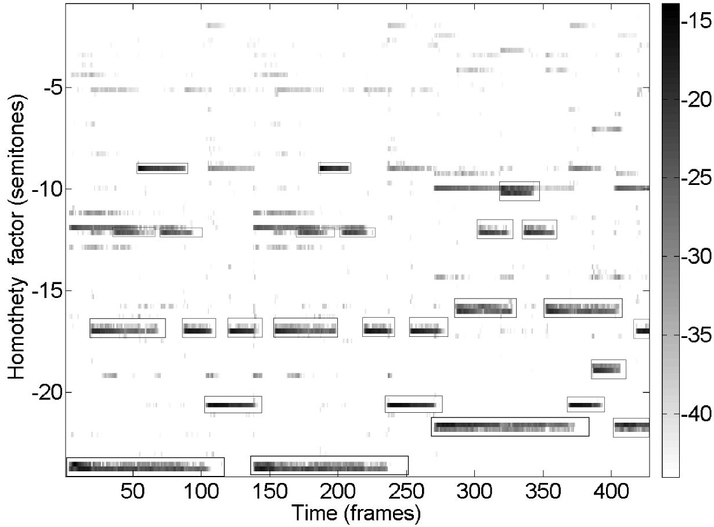

Single note repitching in a polyphonic signal
On this page is presented an application of the Scale-Invariant Probabilistic Latent Component Analysis (SIPLCA) described in this technical report.
SIPLCA makes it possible to separate single notes in a polyphonic signal: one can synthesize a time-frequency mask corresponding to a single note by keeping only a small area around the position of the note in the impulse distribution (the remaining is set to 0), positions of notes being clearly discernible in the impulse distribution. Thus we can easily isolate a single note using Wiener filtering. Once a note is isolated, it is easy to repitch it individually.
Introduction of Because
In this example the spectrogram of the 12 first seconds of the song Because by the Beatles is decomposed with a single template.
Original sound
The obtained impulse distribution is represented below. Actually played notes are materialized by a rectangle in the figure. We can see that in all rectangles, the impulse distribution takes high values.
Repitching individually several notes in the signal, we can obtain the following sound:
Processed sound
Introduction of Guaranteed
This second example is the introduction of Guaranteed by Eddie Vedder:
Original sound
In this example, we change the key from major to minor:
Processed sound
Introduction of Fantasy Impromptu
This third example is the introduction of Fantasy Impromptu by Frederic Chopin:
Original sound
In this example, we change some notes: